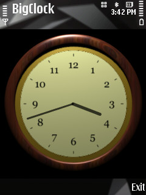

A clock written in Java ME.
I’m really too old to be changing cell phones :-). But I recently bought a Nokia N78, which I like a lot: it’s thin and light, and it has GPS/Nokia Maps, FM transmitter, hot-swappable MicroSD, etc. The price was reduced too since it was introduced earlier in 2008. I suppose for cell phones half a year can already be a “generation”, or two. After I got it, I also realized that I could write programs to run on it. That was just too much fun to resist!
There’re a few choices to make when one starts to write programs to run on a certain cell phone. These can get a little complicated too since in addition to platforms and APIs that are common across cell phones, such as Java ME, MIDP, and JSRs (when they are supported), there’re also manufacturer specific ones such as Nokia’s Symbian OS, Google’s Android, and Apple’s iPhone SDK. I chose Java ME since it works on all cell phones, and it seemed like a easier place to start. Once I made that decision, I had the option to use either Eclipse or NetBeans as IDE. There’s a lot of documentation to read if you’re interested; you can start from this page at the Nokia Forum website. I ended up choosing Eclipse (follow these installation instructions) because I’m somewhat familiar with it. If you’re not, NetBeans may be a better choice since some tasks (such as building menus and specifying the navigation among them) seem to be easier in it. I also did all the development on a Windows PC because I couldn’t find a easy way to install Nokia’s S60 SDK on a Mac.
So my little adventure into Java ME programming was this Java ME Midlet that displays a clock using the full screen on my N78. The reason I need such a clock is the one it displays by default is so small that I can’t see it very well (depending on the pair of eyeglasses I’m wearing).
Here’re the source code and Java ME Midlet of my Big Java ME Clock. The clock will probably only look OK on a 320x240 screen unless you resize the PNG file for the clock face. The program also demonstrates how to use SVG Tiny graphics and rotation (JSR-226), which it uses to display the clock hands.
Category: Programming